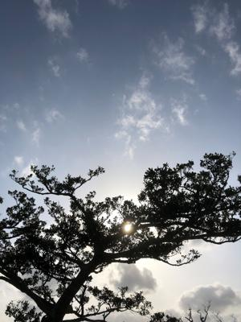
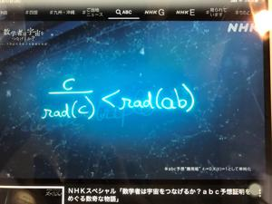
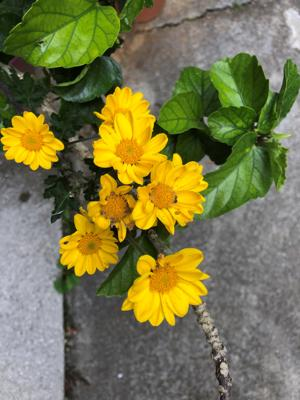

うるがいの話 ある日
最新: アンケートが来た【うるがいの話 ある日】とは 一日だけのプログです
『うるがいの話』の最新一日だけのプログで、通信料が少なく経済的だ。カニの画像をクリックすると全ての日付が載る『うるがいの話』サイトを表示します
|
|
【うるがいの話】 うるがい(ｳﾙｶﾞｲ urugai)とは、『もずくがに』の名前でとても大きくなります。 |
|---|---|
|
|
【カミマヤーの話】 猫のことを方言でマヤーといいます。カミマヤー（kamimayaa）とは、神の猫のことです。 |
|
【たながぁの音楽】 たながぁ（ﾀﾅｶﾞｰtanagaa）とは手長えびのことで、何種類かあり大きいのは車 エビぐらいになります。 |

|
【ぶながぁの話】 ぶながー(bunagaa)とは、赤い髪の毛、赤い身体、そして身長は１ｍ２０ｃｍ ぐらい、川の蟹を食べているの目撃された。場所は沖縄県国頭郡大宜味村のと ある村僕の隣近所に住んでいる爺さんから、聞いた話です。 |
|
|
【ギーマの話】 ギーマ(giima)とは、山原の里山に咲くスズランに似た、 花を付けます。実は食べられます、 気が付くと口の周りが紫になっています。 |
2022年04月17日 (日）アンケートが来た
17:31
  
ＮＡＨＡマラソンへのエントリで利用していたサイトから、アンケートの協力
依頼のメールがきた。ドレドレ、回答してみるかと回答仕掛けたが『大会開催
に当たりコロナ感染症対策の主催側の取組として、やってほしい対策を下記か
ら選んでください。（複数回答可）』の問いで諦めた。１８も選択項目があっ
た、そもそも参加するつもりはないので止めた。ところで参加料の問い『新型
コロナウイルス感染症対策として、会場・コースでの参加者密度を下げるため
、定員を前回の30,000人から20,000人、もしくは10,000人とした場合、
大会準備経費の多くは定員が減っても変わらず、逆に感染症対策費及び世界情
勢による物資・エネルギーの高騰で費用が増加することから現行の参加料
8,000円では開催ができない状況です。参加料がいくらまでなら参加申込み
を検討しますか？』選択は
30,000円以上でも参加する
24,000円までなら参加する
20,000円までなら参加する
16,000円までなら参加する
12,000円までなら参加する
8,000円以上は参加しない
うーん、コドモは参加する気バリバリダだが、ケチなので値段と感染対策で参
加しないかも。
話は変わるが、ＮＨＫ『数学者は宇宙をつなげるか？ａｂｃ予想証明をめぐる
数奇な物語』の式の夢を見る。なんで、こんな夢をみるのだろう一浪しなけれ
ば数学の先生になっていたかもしれないから？。
１７時２２分 ビットコインの総資産 ￥１４、７９５↓